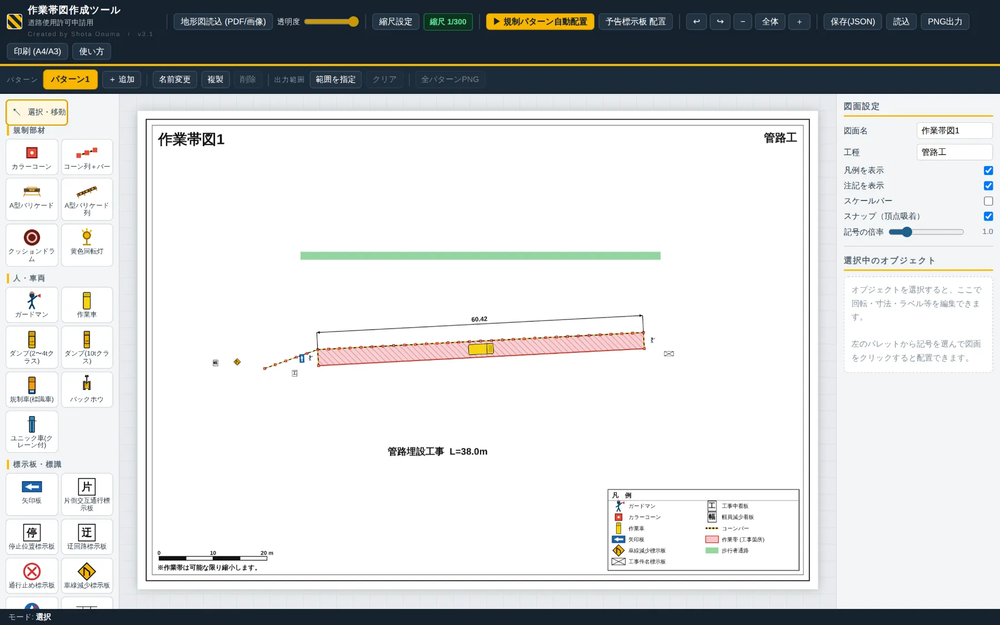
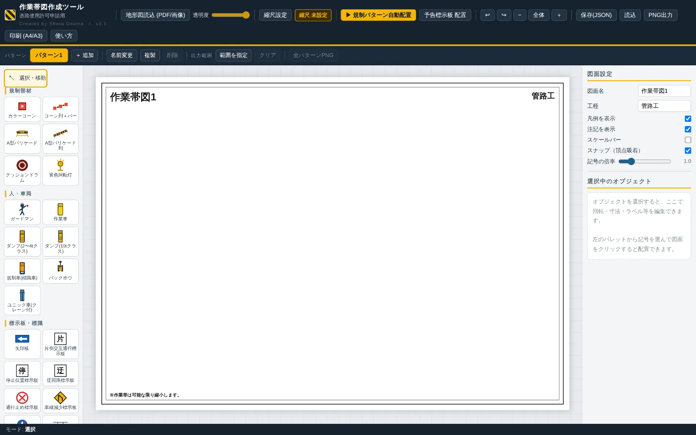

作業帯図作成ツールWORK ZONE DIAGRAM BUILDER
道路使用許可申請に添える作業帯図を、地形図の上に半自動で作図。 縮尺を合わせて、規制パターンを起点→終点の2クリックで置けば、部材と凡例がそろった図面ができます。 手直しはドラッグと回転だけ。そのままA4/A3で印刷、PNGで提出。

申請図のために、CADを開いて1時間
地形図に手で貼り込む
PDFの地形図をキャプチャして、CADや作図ソフトにコーンや看板を1つずつ配置。工区が変わるたびにやり直し。
縮尺が合わない
図面上の距離と実延長が一致せず、コーン間隔や作業帯幅の寸法が合わない。修正のたびに全部ずらす。
パターン違いを何枚も
片側交互通行と車線減少で2案、昼夜で別図…。同じ地図に別の配置を描く作業が何度も発生する。
読み込む → 縮尺を合わせる → 2クリックで配置
作図の骨格（起点・終点・設置側）だけ人が指定し、部材の並びは自動。手直しはすべて図面上で直感的に行えます。
地形図を背景に読込
PDF（複数ページならページ選択）またはPNG/JPGを背景に。透明度を調整して線が見やすいように。
実寸連動の縮尺
2点クリック＋実距離、または「1/500」のような縮尺分母の直接入力。以後の寸法・間隔はすべて実寸で連動し、スケールバーも出せます。
規制パターンの自動配置
片側交互通行／車線減少／通行止め＋迂回。起点→終点をクリックすると作業帯・コーン列・ガードマン・標示板をひとまとめに配置。
20種超の保安施設記号
カラーコーン、A型バリケード、クッションドラム、回転灯、各種標示板、ダンプ・バックホウ・ユニック等の建設車両まで。
作業帯・導流帯・寸法
作業帯（塗り＋斜線）、導流帯（ゼブラ）、歩行者通路、コーン列、寸法線・連続寸法、文字。寸法値は実寸で手入力もできます。
凡例の自動生成
図面に置いた記号から凡例を自動で作成。使っていない記号は載らないので、修正のたびに凡例を直す手間がありません。
1工事＝複数パターン
同じ地図の上で「パターン1／2／…」を切り替えて別案を作図。全パターンをまとめて連番PNG・複数ページ印刷。
スナップ・整列・集計
頂点の吸着、複数選択の整列・等間隔配置。選択した作業帯の面積や規制延長を自動集計します。
保存と出力
自動保存（ブラウザ内）＋JSON保存/読込で背景ごと復元。2倍解像度PNG出力、A4/A3横の印刷に対応。
基本の5ステップ
初回でも10分ほどで1枚目が仕上がります。操作はすべて画面上部のボタンと、左のパレットから。
地形図を読み込む
ヘッダー左「地形図読込 (PDF/画像)」。PDFは1ページ目（複数ページなら番号を指定）を自動でラスタ化します。
縮尺を設定する
「縮尺設定」→ 地図上で距離の分かる2点をクリックし実距離(m)を入力。図面の縮尺が分かっていれば「1/500」のように分母を直接入力してもOK。
規制パターンを自動配置
「▶ 規制パターン自動配置」でパターン・作業帯幅・コーン間隔・設置側を選び、図面上で起点→終点を2クリック。
手直しする
ドラッグで移動、Rで15°回転、Deleteで削除、頂点ドラッグで変形。右パネルで寸法値・ラベルを編集。Ctrl+Zで戻せます。
出力する
「PNG出力」または「印刷 (A4/A3)」。複数パターンがあれば「全パターンPNG」でまとめて出力できます。

キーボード早見表
| 選択 | クリック／空所からドラッグで矩形選択／Shiftで増減／Ctrl+Aで全選択 |
|---|---|
| 回転・削除 | R（15°ずつ）／Delete |
| Undo/Redo | Ctrl+Z／Ctrl+Y |
| 画面移動 | Space+ドラッグ／右ドラッグ／ホイールでズーム |
| 作図の確定 | ダブルクリック または Enter、中止は Esc |
使う前に知っておくこと
| 対応ブラウザ | Chrome / Edge などのデスクトップ向けモダンブラウザ（Canvas 2D 前提）。スマートフォンは想定外です。 |
|---|---|
| 通信 | PDFの読込にだけ初回インターネット接続が必要（PDF.js をCDNから取得）。オフライン環境ではPDFを画像化してから読み込んでください。 |
| 保存先 | 自動保存はブラウザ内（localStorage）。確実な保管はJSON保存を使ってください。容量超過やプライベートモードでは自動保存が働かないことがあります。 |
| 用紙 | 内部はA3横相当（√2:1）で描画。A4/A3は同じ比率のため、印刷時に用紙へフィットさせて両対応。印刷ダイアログ側でも用紙サイズを確認してください。 |
| 形式 | 単一HTMLファイル。ダウンロードしてUSB等で持ち込めば現場PCでも動きます（ビルド・サーバー不要）。 |
更新履歴 最新 —